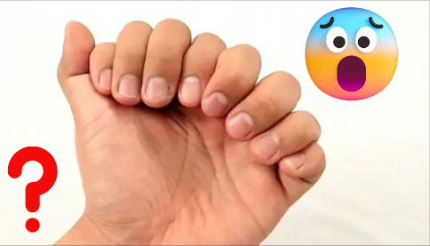
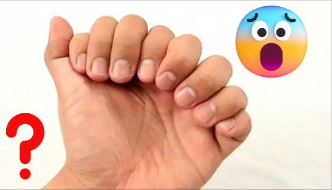
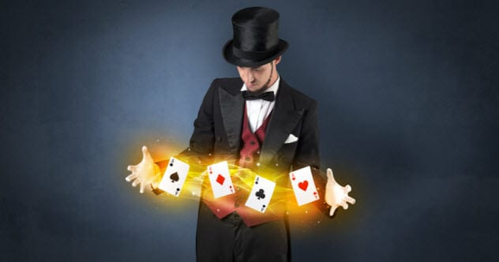
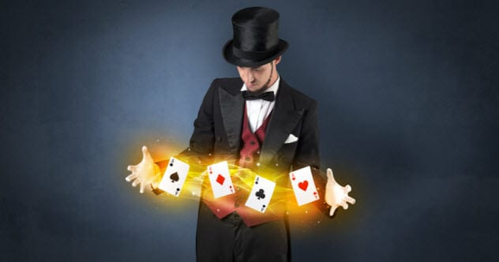

Overview
Purpose
Our Purpose is to help you to both develope your magic skills and to provide you with the neccessary progress for you to Create your unique magic style that will set you apart from other magicians and create unforgetable memories for yourself and your audiences.
Audience
Although our main focus and big audience is the youth and up to the age of 40 yeears,We believe Anyone can do magic and has magic in them,we welcome all that are interested to start this awesome and magical journey. We also have a special offer for our returning customers.
Branding
Website Logo

Style Guide
Color Palette
Palette URL: https://coolors.co/8ecae6-2596be-ffb703-ffffff| Primary | Secondary | Accent 1 | Accent 2 |
|---|---|---|---|
| [#8ecae6] | [#ffb703] | [#2596be] |
Typography
Heading Font: Amita
Paragraph Font: Noto sans
A Glimpse into Magic
Imagine being able to bring your coola nd even insane imaginations to life, and that's not all, you add an extra skill of using it to both entertain, amaze peaople and earn money from it if you desire aswell.
Colored paragraph example
Whether it is becoming a close-up magician, doing table magic, or stage magic, we've got you covered ,we provide all the important and relevant information and help for you in your desired magic direction that you would need to aim for.
Navigation
Site Map
Content
Home page
Magic within you. It is true that no two people are exactly the same in character, identity and all the tiny aspects of being, in effect,we believe everyone including you has something unique within them and to contribute to the world which is commonly refered to as Leaving your mark. Whether you don't know anything about magic or want to improve and perfect your skills, you are at the right place.
Incredible Opportunity.Think about it, out of insanely alot of people who have walked the earth, you are here right now at a time with un-imaginable knowledge,opportunities and many possibilities.Whether you intentionally came to my website or was just browsing and landed here, learning more about magic might actually be apart of the many marks you will create in your life and the lives of others. So fasten your seatbelt as we dive into the real life adventure of helping you tap into your inner magic as we learn what magic is and how we can make it bend reality aswell as leaving un-forgetable experiences for whoever you will do it for.
Frequently asked questions. The following are some of the frequently asked questions about magic.
Is magic sorery?. The magic we are going to be learning is not sorcery though it may appear as so , magic is all about manipulating objects and people's perception of things,it involves alot practice, and usually doing moves that the audince may not suspect and are not anticipating are going to happened.It is like going back to the year 1920 with your smart phone, when you take a photo of them and show them, it appears to be magic to them but to you it is a plain normal phome and you know how you did it.
Who is the best magician in the world?. The word best actually depends on different thing and we may end up getting different answers depending on what magicicians specialise in. Some magicians are good with car magic ,others with coins , some are good at close-up magic while others are good with stage magic.So giving a specific answer without specifying the specific type or category of magic may be a little misleading. David copperfield would be at the top of most best magicians list of all time.
is magic real?. Magicians use practice,sleight of hand, misdirection, gimmicks and timing to make it look convicing and close to reality.
How much do magicians earn?. This depends on the magician, where they are perfroming from and maybe their popularity. Professional magicians earn from around $21200 to $106000.
Images for the Home page
 

Types of Magic
Categories of magic.Though we may have the major types of magic such as close-up, Table magic, Stage magic, and more; Magic is made up of about 10 building categories that may be used individually or combined to form interseting visuals while performing.These ten categories include; Levitation, Vanish, Production, Transformation, Transposition, Penetration, Restoration, Escape, Teleportation and Prediction. We will be learning more about these individually and how they contribute to ur final performance to create the beautiful art of magic.
Your own creations. As we begin, you will start by learning from what already exists and what other magicians know and from the foundations of other magicians who came earlier than you. These will be the different skills created by them mixed with the different categories of magic mentioned above. But later when you are done with the basics and needed practice ,i will teach you how to set up your mind so that you are able to create your own magic tricks from scratch so that you can develope a routine using the simple formular i will teach you. When you create your own magic tricks, you will feel proud of yourself and those who will use your tricks will be proud that you invented them and all this is part of leaving your mark on the world. Your creatons will live on and will be used by many others for years even when you pass on.
Images for the Page 2
 

Magic Monetization
Make money with it. You may be wanting to learn magic as a hobbie or infact are doing it as one but you could take it a step further by monetizing it and start earning money from it, we will be sharing of the different ways of how to start earning money from magic and the different sources and you can use such as online teaching,perfomance, social media, in-person persformance ,advertisements,Television and many more. If magic your passion,then you will be earning from what you love, there is nothing as sweet as earning from something that you would even do for free if you were required to.
Passive income. Apart from making money whenever you perform, you can also create a passive income stream which may not require you to manage and moniter all the time, insn't that exciting? . This is our final goal for all those who come to this website and take action on whatever we recommend. As you learn these skills, you will be able to make performing magic as a profession and you can continue doing magic for money but aswell as have automation of income from your passive streams.
Images for the Page 3


Wireframes
Create three wireframes for your site. One for each page and list them here
Home
[Any additional details about home that the wireframe does not make clear]

Types of Magic
[Any additional details about page 2 that the wireframe does not make clear]

Magic Monetization
[Any additional details about page 3 that the wireframe does not make clear]